Matched-policy benchmark: growth rows share the same initial count, final cap, growth waves, fitter, renderer, loss, target tracking, and iteration budget. External repos are represented by local analogues here; this is not a native external-pipeline benchmark.
Visual grids show each reconstruction row followed by an amplified absolute difference row: |target - reconstruction| x6, clipped for display.
summary.md · metrics.csv · metrics.json · convergence_curves.csv · target_hit_rates.csv · config.json
| Method | Track |
|---|---|
| SS best default | best-default |
| SS best + SSIM 0.10 | best-loss-sweep |
| SS best + L1 only | best-loss-sweep |
| SS best + Charbonnier | best-loss-sweep |
| SS best + tensor loss | best-edge-loss |
| SS best + final color solve | best-color-polish |
| SS best + split relocate | best-relocate |
| SS best + adaptive 1.5x cap | best-adaptive-capacity |
| GaussianImage fixed | fixed-full |
| GaussianImage++ residual | repo-growth |
| Image-GS residual | repo-growth |
| Instant-GI quadtree | fixed-full |
| SS on-edge + residual | same-growth |
| SS on-edge + residual relocate | same-growth+relocate |
| SS on-edge + residual feature cap | same-growth+feature-cap |
| SS on-edge + residual feature-rel cap | same-growth+feature-rel-cap |
| SS on-edge + tensor | tensor-growth |
| SS on-edge + tensor feature cap | tensor-growth+feature-cap |
| SS on-edge + tensor feature-rel cap | tensor-growth+feature-rel-cap |
| SS flanking + tensor | tensor-growth |
| SS qt-WSE + residual | same-growth |
| SS qt-WSE + residual relocate | same-growth+relocate |
| SS qt-WSE + residual feature cap | same-growth+feature-cap |
| SS qt-WSE + residual feature-rel cap | same-growth+feature-rel-cap |
| SS qt-WSE + tensor | tensor-growth |
| SS qt-WSE + tensor feature cap | tensor-growth+feature-cap |
| SS qt-WSE + tensor feature-rel cap | tensor-growth+feature-rel-cap |
| SS qt-hybrid + tensor | tensor-growth |
| Floyd + tensor | tensor-growth-control |
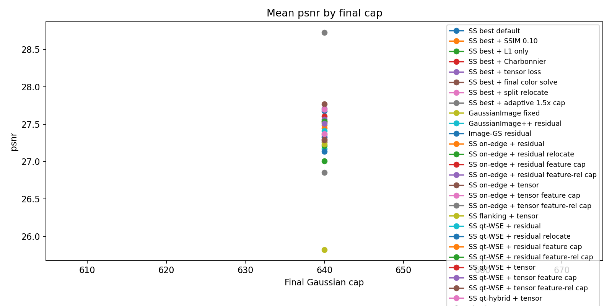
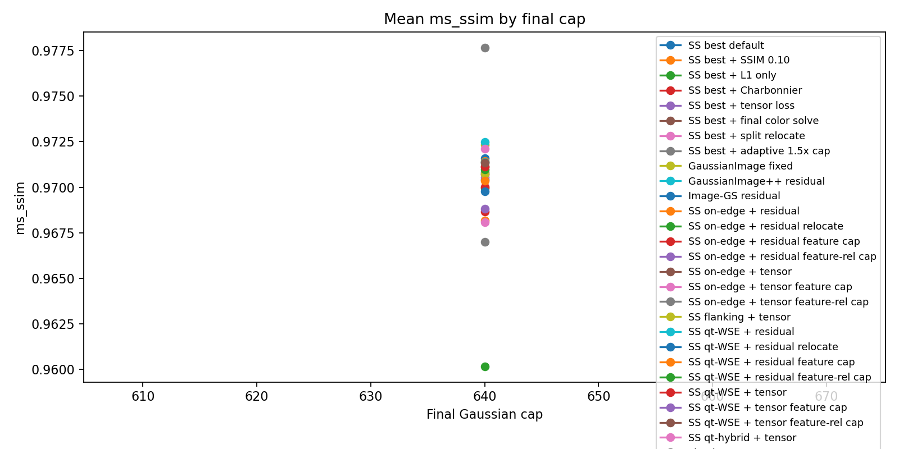
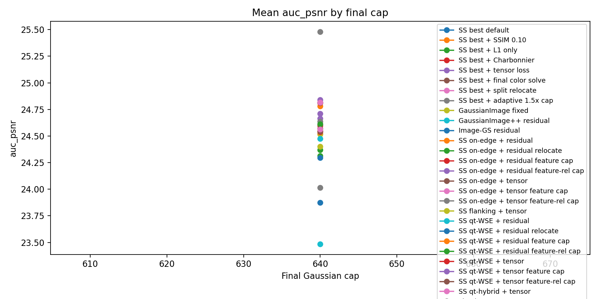
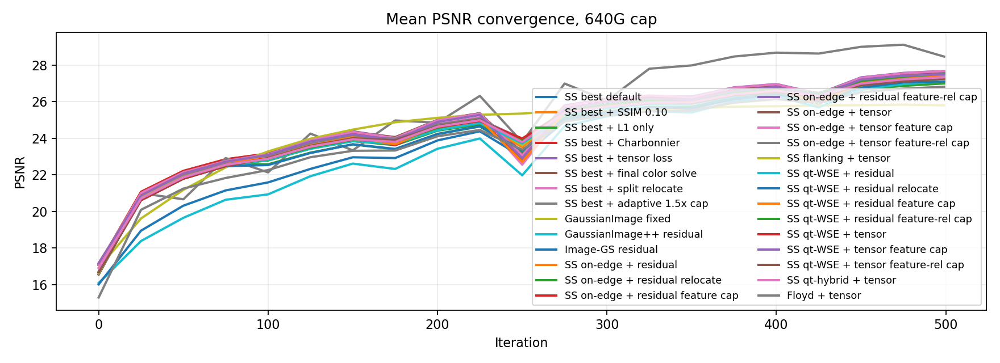
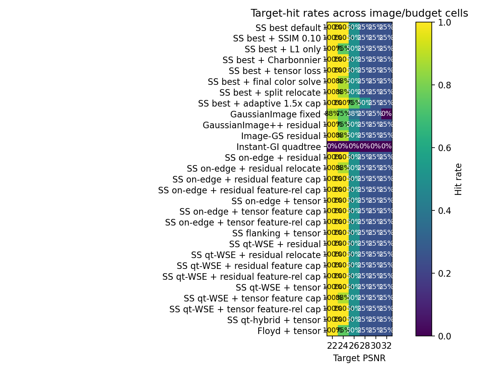
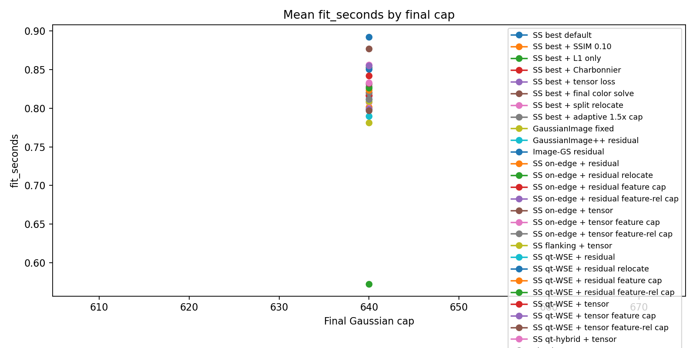
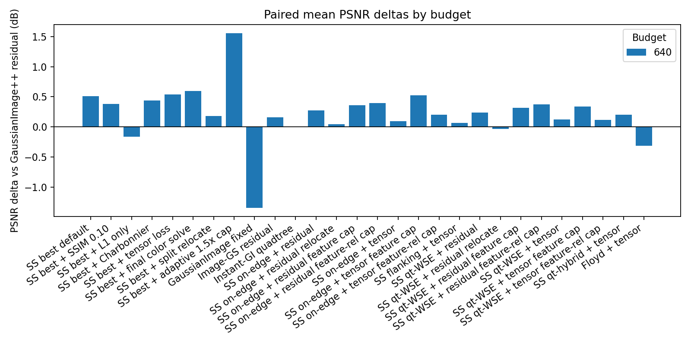
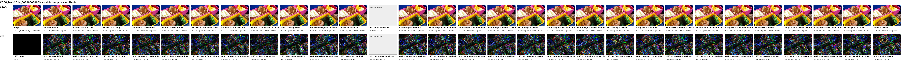
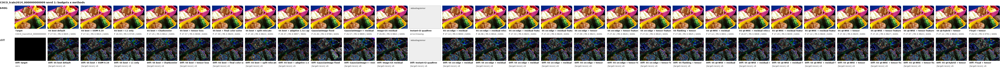
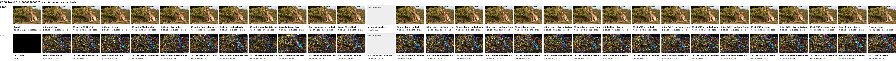
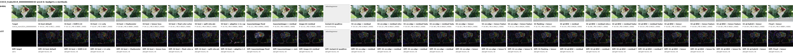
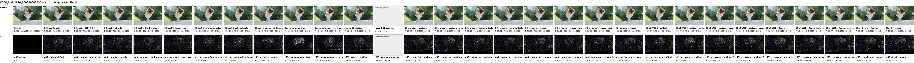
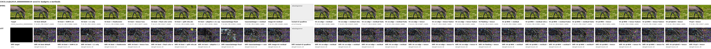
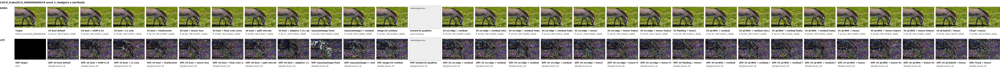
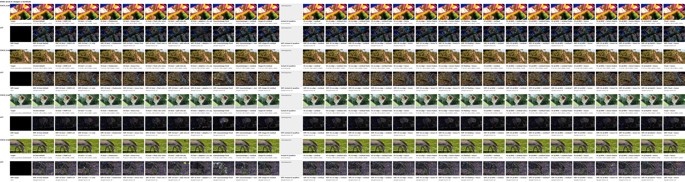
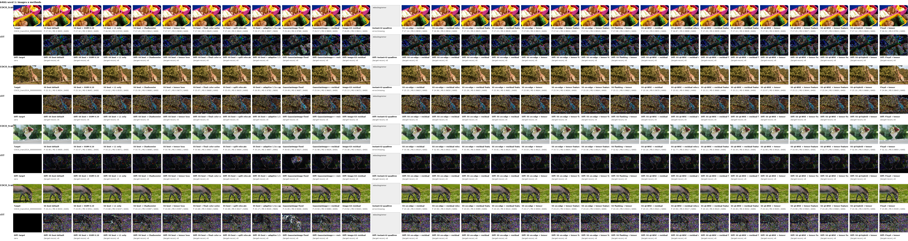
{kind=link}
{kind=link}
{kind=link}
{kind=link}
{kind=link}
{kind=link}
{kind=link}